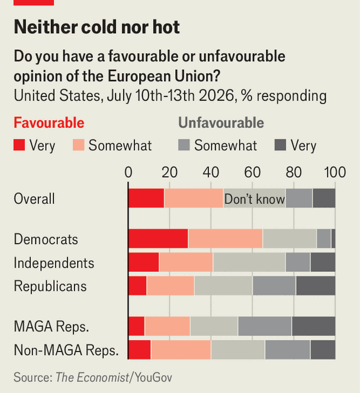

Why MAGA hates and loves Europe
Three big reasons explain the New Right’s hostility to Europeans
Oct 1st 2026
EUROPE’S CHURCHES may be empty, but to judge by the Cornerstone Chapel in Leesburg, Virginia, many in America are doing all right. The 2,000-seat church holds three services on Sunday morning, each so packed that police are needed to direct traffic. After some Christian rock from the house band, pastor Gary Hamrick urges the congregation to vote against ballot measures for gay and abortion rights. Then he turns to his sermon, on sin and redemption in Colossians 3: “You have put off the old man with his deeds.”
For many in the pews, it is not just the old man but the Old World that has a problem. Europe is going “very cold against the Lord”, says Tyler Hamrick, the pastor’s son, who has followed him into the ministry. “Satan has definitely—a veil has been brought over the eyes of the Europeans.” Worshippers worry about Muslim immigration in Britain, France and Germany. Matt Denby, a missionary who has worked in Hungary, says Christians see the continent’s secularism as a warning: “Same-sex marriage and abortion and transgender, Europe’s already gone through those…Is that now going to happen here?”
Evangelical Christians are the heart of the Republican Party’s base, and their views help to explain America’s hostility towards Europe during Donald Trump’s second term. The bellicosity has been striking, and it leaves many Europeans baffled. America’s latest national security strategy, released last November, castigated Europeans for embracing “civilisational erasure” by over-regulating the economy and allowing mass immigration. Practical disputes over defence spending levels can be addressed; such deeper resentment is harder to deal with. Where does it come from?

Recriminations against Europe among the New Right, as MAGA intellectual circles are called, fall into three overlapping baskets. The most straightforward are geopolitical, says Nathan Pinkoski of the Centre for Renewing America, a conservative think-tank in Washington. The New Right’s foreign-policy realists think America should move away from cold war-style global ideological alliances, prioritise its own interests and shift the burden of Europe’s defence to Europe. Some focus on China, others on American hegemony in the western hemisphere. (Mr Trump’s war on Iran has both camps grumbling.)
Claims of “civilisational erasure” belong to a second, different vision, rooted in national-conservative ideas about cultural heritage and the evils of globalism. Michael Anton, a writer at the right-wing Claremont Institute, is believed to have coined the phrase, which evokes an embattled citadel of white Christian culture. MAGA influencers have spent a decade telling Americans fanciful horror stories of a Europe overrun by Muslim immigrants and drug crime. Mass migration in Britain “is a history of civil tension, punctuated by violence: riots, terrorism, murder, rape”, wrote Christopher Rufo, a MAGA activist, last year.
The selling of this narrative is a rare recent example of transatlantic co-operation. Elon Musk has used X, his social-media platform, to promote racist activists in Britain and Austria and the populist-right Alternative for Germany. In fact Muslims make up perhaps 6-10% of the population in western Europe. Even big cities such as London and Paris, where the Muslim share of the population is closer to 15%, are no less safe than American ones.
Beyond the bigoted overtones, civilisational fear-mongering frustrates realists who dislike moral narratives. “You cannot be a nationalist and a civilisationalist at the same time,” argues Sumantra Maitra of the Institute for Peace and Diplomacy, a realist think-tank in Washington. Realists see civilisationalist support for populists in Germany and Poland as dragging America back into ideological conflicts. Yet both happily bash the European Union. Colin Dueck of the American Enterprise Institute, a non-MAGA conservative think-tank, says the bloc makes a perfect target for MAGA: “a gigantic, meddling, progressive multilateral organisation which is unhelpful to us militarily. I mean, you could just go down the list of vices.”
The EU’s regulatory efforts lead to a third set of critiques, mixing ideology and commerce. Over the past year the Trump administration has attacked the bloc’s Digital Services Act (DSA) for restricting freedom of expression on American tech platforms. Sarah Rogers, an undersecretary of state, has blasted European countries (sometimes misleadingly) for prosecuting social-media users. The judiciary committee of the House of Representatives has held hearings on the DSA’s “threat to American speech and innovation”.
“We believe in free expression, that’s one of the hallmarks of Western culture,” says Jim Jordan, the committee’s chair. “We don’t like it that Europe is taking down American tech companies either.” MAGA critics highlight prosecutions in Europe over posting anti-gay Bible verses, but business interests play a role too. Last week the Trump administration asked to join Mr Musk’s case at the European Court of Justice against a €120m ($137m) fine on X for violating the DSA.
Does MAGA want a Europe of mutually non-interfering nation-states, or one where American values rule? The confusion is inevitable because of the centrality of European heritage to the movement’s idea of America. It has a “complicated love-hate relationship to Europe”, says Laura K. Field, whose book “Furious Minds” is a sophisticated treatment of New Right thought. Like 19th-century Americans who imported European culture, she says, many New Right thinkers have fallen in love with one vision or another of Europe. But “they also think they can school the Europeans, that Europe is not being true to itself and is losing its traditions.”
Many MAGA supporters think of their criticisms of Europe as tough love. “The civilisational [New Right thinking] is actually born out of deep affection for Europe. It’s a concern about the direction the continent has been headed,” says Mr Pinkoski. Tucker Carlson, a long-time conservative commentator, told The Economist in June that Europe and America were natural allies “on the deepest possible level”.
The Trump administration’s flashes of contempt for Europe do not necessarily reflect MAGA voters’ attitudes. A poll in July by YouGov found that 32% of Republicans had favourable views of the EU and 40% unfavourable; among MAGA Republicans it was 30% to 44%. That was much lower than among Democrats (62% to 9%), but not catastrophic. And friendliness towards individual European countries differed only modestly between Democrats and MAGA backers.
Europe could conceivably use such goodwill to build an alliance with a post-Trump America. Old-fashioned internationalists among Congress’s Republicans certainly think so. The truly isolationist element of MAGA is “a small percentage”, insists Joe Wilson, a pro-NATO Republican congressman from South Carolina. His state, he says, “appreciates its European heritage” and trade links.
But it seems more likely that the paths of Europe and America will continue to diverge. Some Americans, misled by social media, imagine a Europe dominated by Islam that most Europeans do not recognise. Others in America dislike the EU as an international regulatory institution. MAGA voters often see Europeans, with their secularism and generous social-welfare policies, as exaggerated versions of America’s Democrats. When they worry about going “the way of Europe”, they are partly projecting their own fears. There is not much Europe can do about those. ■